Turn your photos into a real cube mosaic
RubiPic converts any photo into a print-ready plan built from Rubik's cube faces. Print the instructions, arrange the cubes on the grid, and build your own artwork at true 1:1 scale.
No accounts · No ads · Everything runs on your phone
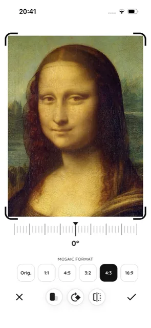
From photo to mosaic in a few steps
Everything happens right on your phone — no internet, no uploads.
Pick and crop a photo
Choose an image from your gallery, take a new photo, or import a file. Crop, rotate, and pick a mosaic format in seconds.
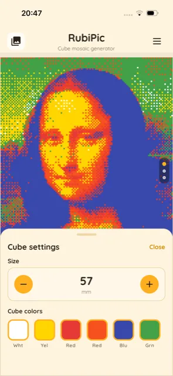
Set the cube and size
Choose the cube size in millimeters, pick colors — including fully custom shades — and select a ready-made mosaic size with a real-world dimension in centimeters.
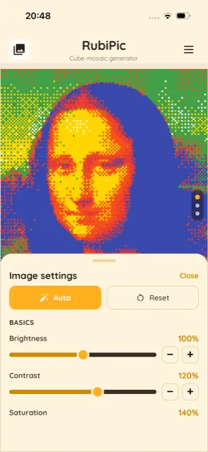
Fine-tune the look
Adjust brightness, contrast, and saturation (or hit Auto), and tweak individual colors when you need the mosaic to match the photo as closely as possible.
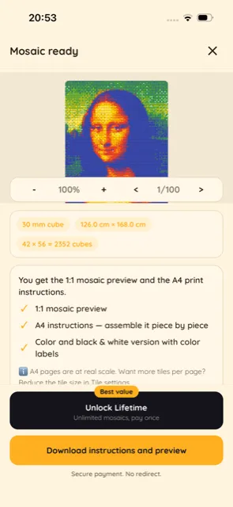
Print and build
Generate the mosaic plan, print the instructions split across A4 pages, and place real Rubik's cubes on the grid.
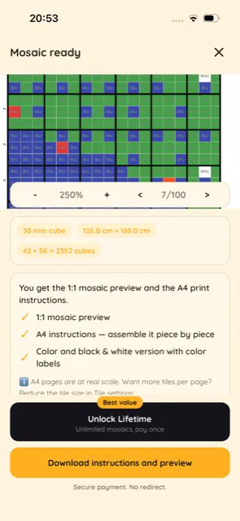
Print in color
Get a full-color instruction sheet in the real cube colors — ideal if you own a color printer.
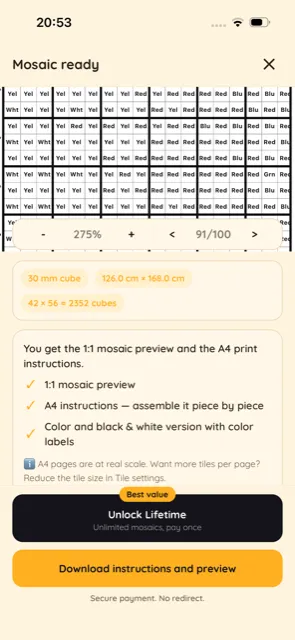
Or print in black & white
Print the same plan in grayscale, with the color labeled in every cell — saves ink and works on any printer.
Three ways to map your photo to cube colors
RubiPic offers several image-processing methods — each distributes colors and detail differently. Pick the one that suits your photo best.
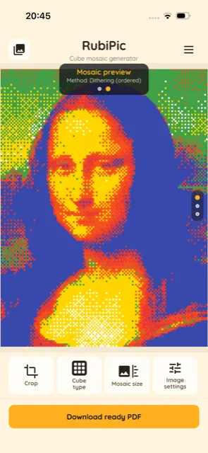
Dithering (ordered)
Spreads the limited cube-color palette in a regular pattern, so tonal transitions and gradients look smoother and the mosaic keeps more detail in bright and dark areas of the photo.
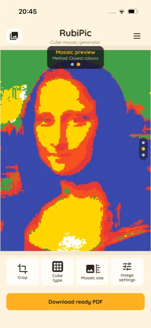
Closest colours
Picks the nearest available cube color for every mosaic cell. Produces bold, high-contrast, "poster-like" blocks of color — great for portraits and photos with clear shapes.
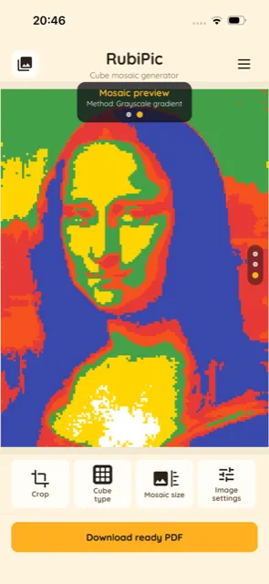
Grayscale gradient
Converts the image to grayscale first, then maps brightness onto the chosen cube colors as a tonal gradient. The result feels more painterly and calmer in color.
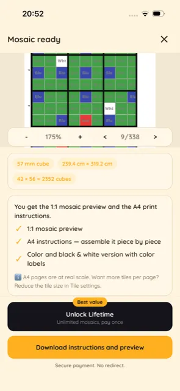
A grid where every square is one cube
Each cell of the printed sheet shows which cube color belongs there. Just place a cube of the matching color on that square.
- Color labels printed in every grid cell
- X / Y coordinates around the edges keep you from losing your place
- Large mosaics are split across multiple A4 sheets
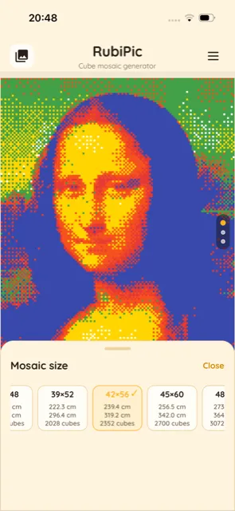
Printed at true 1:1 scale
The instructions are generated at real-world scale, so the printed grid matches the physical size of your cubes exactly. Tile the pages together and start placing cubes.
- Snap cubes into the grid row by row
- Works with the standard Rubik's cubes you already own
- Frame the finished mosaic and hang it on your wall
Everything you need to build a cube mosaic
Powerful options, fully on-device and with nothing collected.
Custom cube colors
Any number of colors from an HSV picker or HEX code — match the palette to the cubes you actually own.
Adjustable cube size
Set the cube size in millimeters and see the real-world mosaic dimensions and cube count update live.
Ready-made mosaic sizes
Choose from a list of preset grid sizes with real centimeter dimensions and cube counts — or set your own.
3 generation methods
Dithering, closest colors, or grayscale gradient — each method maps detail and contrast from your photo differently.
Brightness & color correction
Brightness, contrast, saturation, and per-color correction (or one-tap Auto) to get the mosaic as close to the original as possible.
A4 print with coordinates
Instructions at 1:1 scale, split across A4 pages, with color labels and X/Y coordinates on every sheet.
Color or black & white print
Print a full-color version or a black-and-white one with labeled colors — perfect if you don't own a color printer or just want to save ink.
Multiple photo sources
Use a photo from your gallery, your camera, or import a file — with crop and rotate in a couple of taps.
100% private
No accounts, no backend, no tracking. Your photos never leave your device.
Fine-tune every detail of the mosaic
Pick a fully custom cube color from an HSV/HEX picker, or correct each color individually to get the mosaic as accurate as possible.
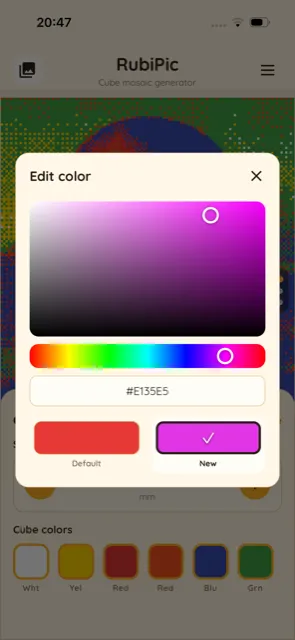
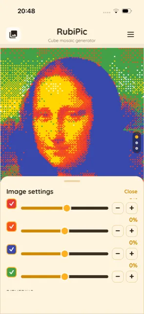
Frequently asked questions
How does RubiPic work?
You pick a photo, set the cube and mosaic size, and the app turns the image into a grid of cube colors using one of three methods. You then export a print-ready PDF and build the mosaic with real cubes.
What do I actually print?
An instruction sheet: a grid where every cell has a labeled cube color, plus X/Y coordinates so you always know where you are. Place a cube of that color on the matching square.
What cubes do I need?
Standard Rubik's cubes in the colors you choose in the app — including fully custom colors. You set the cube size in millimeters.
Is the print really at 1:1 scale?
Yes. The PDF is generated at real-world scale, so the printed grid matches the physical size of your cubes. Just make sure your printer prints at 100% (no scaling).
Do I need a color printer?
No. Besides the color version, you can print a black-and-white version with labeled colors in every cell — it works on any printer and saves ink.
Do you collect my photos or data?
No. All image processing happens locally, on your device. There are no accounts, no servers, no analytics, and no tracking.
Ready to build your first cube mosaic?
Download RubiPic and turn a favorite photo into artwork made of Rubik's cubes.
See how it works